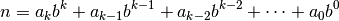
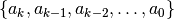
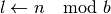
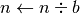

binary – Decimal to Binary Converter¶
This is fairly silly, since int() and bin() do this nicely.
However.
It can be instructive to show the algorithm for this kind of base conversion.
Analysis¶
For a given base,  , a number,
, a number,  is simply a polynomial in that base.
is simply a polynomial in that base.

Essentially, we’re calculating the various values 
The easy way to do this is to start from the Least Significant Bit (LSB).

Once this bit has been determined, then dividing the input value, , by the base, , makes another bit the LSB.

Here’s a Python version.
while n != 0:
lsb = n % 2
n = n // 2
We can use the divmod() function for this.
while n != 0:
n, lsb = divmod( n, 2 )
This trivially generalizes to any other base, simply replace the 2.
The sequence of LSB’s is the binary representation. We need to reverse the sequence for display purposes.
bits = []
while n != 0:
lsb = n % 2
bits.append( lsb )
n = n // 2
bits.reverse()
Or, perhaps we can build the sequence in the proper order.
bits = []
while n != 0:
n, lsb = divmod( n, 2 )
bits.insert( 0, lsb )
Since the HamCalc program is focused on 24 bit resolution, we can mimic that, also.
bits = [ 0 for i in range(24) ]
i= 0
while n != 0:
lsb = n % 2
bits[23-i] = lsb
i = i+1
n = n // 2
We could use a generator function to develop the bits separate from collecting them.
def binary( n ):
while n != 0:
n, lsb = divmod( n, 2 )
yield lsb
Here’s a naive use.
bits= list( binary(n) )
bits.reverse()
Here’s a slightly more HamCalc-focused use.
bits = [ 0 for i in range(24) ]
for i, lsb in enumerate( binary(n) ):
bits[23-i]= lsb
Quirks¶
The HamCalc algorithm does not start with LSB. It starts with MSB. This version isn’t wrong, but it seems to involve more IF statements than should be used for this problem.
It also includes an unused dimensioned variable, X.